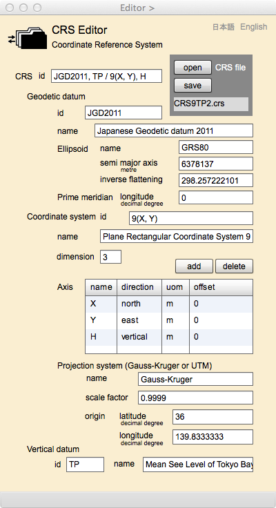

CRS Editor
CRS is an abbreviation of Coordinate Reference System. CRS is defined as "coordinate system that is related to an object by a datum" in ISO 19111:2007 - Spatial referencing by Coordinates. Datum in this case is a geodetic datum that is defined by a set of parameters to describe the shape of the earth and the prime meridian as a starting meridian to measure longitude.This text introduces CRS and then explains CRS Editor page.
Coordinate Reference System
The structure of gittok CRS is defined by the following UML diagram.
Figure 1. UML class diagram of CRS
CRS
This is a root class of whole classes. CRS associates with datum, vDatum and cs.
Attributes
id
an identification of CRS put under the rule adopted by the authority.
Associations
datum
A role name of GeodeticDatum that represents the shape of Earth.
cs
A role name of CoordinateSystem that defines a set of horizontal coordinate axes.
vDatum
A role name of VerticalDatum that defines vertical coordinate axis to represent height.
GeodeticDatum
GeodeticDatum defines a shape of Earth as an ellipsoid, and where is the prime meridian for this datum. Datum is a singular form of data. But geodetic datum consists of multi parameters. A line specifying longitude is a curve called meridian which connects north pole and south pole. The meridian referring zero degree is called prime meridian that is a curve usually passing Greenwich in England and the east direction is plus. However it is possible to set prime meridian at any longitude. Such longitude can be defined in the geodetic datum as "greenwich longitude".
Attributes
id
identification code of the geodetic datum. A rule to put id should be specified at the authoritative organization such as International Association of Oil & Gas Products (http://www.epsg-registry.org). An id of Japanese Deodetic Datum today is "JGD2011".
name
A name of the geodetic datum. A name of Japanese geodetic datum is "Japanese Geodetic Datum 2011".
Associations
ellips
A role name of Ellipsoid that represents a reference ellipsoid to define the shape of Earth.
pm
A role name of PrimeMeridian that represents the greenwich longitude.
Ellipsoid
This class has a set of parameters defining the shape of Earth as a reference ellipsoid. The shape of Earth can be approximated by the spheroid and it is called a reference ellipsoid. Parameters of Ellipsoid are semi-major axis (semiMajorAxis) and inverse flattening (inverseFlattening). Inverse flattening is frequently used in Geodetical computations. It can is defined as, a/ (a - b). Where "a" is a length of semi-major axis, and "b" is a length of semi-minor axis.
Japanese government adopted "Japanese Geodetic datum 2011" and which parameters are,
semiMajorAxis = 6377397.155 m
inverseFlattening = 298.257222101
This ellipsoid is originally provided as GRS80 by International Union of Geodesy and Geophysics (IUGG) in 1980. Meanwhile in October 2011, GSI released "Japanese Geodetic Datum 2011 (JGD2011)" as the new standard datum of Japan because of the wide area crustal deformation caused by "The 2011 off the Pacific coast of Tohoku Earthquake" which occurred on March 11, 2011. Parameters of Ellipsoid did not change but the local origin point of latitude and longitude, and the reference position of height changed. These parameters are used for the determination of control points, but they are not required for map projections.
Attributes
name
a name of the reference ellipsoid.
semiMajorAxis
Length of the semi-major axis. The unit is meter.
inverseFlattening
a value of inverse flattening.
PrimeMeridian
The meridian referring zero degree of longitude is called a prime meridian that is a curve usually passing Greenwich in England and the east direction is plus. However it is possible to set prime meridian at any longitude. Such longitude can be defined in the geodetic datum as "greenwich longitude". In case of Japan, greenwich longitude is zero.
Attributes
GereenwichLongitude
Longitude determined as a local reference measured from the meridian passing Greenwich.
CoordinateSystem
Coordinate system defined in gittok consists of definition of Axes and a definition of projection system. Projection system specifies the relationships between geodetic coordinates (latitude and longitude) and plane rectangular coordinates. Gittok only can use Gauss-Kruger projection now.
Attributes
id
identification code of the coordinate system. A rule to put id should be specified by the authoritative organization such as the national mapping agency.
name
a name of the coordinate system.
dimension
a number of coordinate dimension.
Associations
axis
a role name of Axis that defines an axis of coordinate element.
ps
a role name of ProjectionSystem that defines parameters of Gauss-Kruger Projection.
Axis
Coordinate axis is defined by a name, direction and measuring unit. For example,
name: X
direction: north
unit: m
Attributes
name
a name of the coordinate.
direction
positive direction of the axis.
unit
measuring unit.
ProjectionSystem
A definition of the projection is used to encode plane rectangular coordinates in a kit into geodetic coordinates in the XML document. In Japan, 19 plane rectangular coordinate systems are defined by the government. Conversion between plane coordinates and geodetic coordinates are done by Gauss-Kruger Projection. The extent of each system is determined in order to restrict the scale factor is less than 0.9999 (0.9996 in case of Universal Transverse Mercator Projection (UTM)).
Attributes
name
a name of projection.
scaleFactor
a value of the scale factor.
origin
a geodetic coordinate of the origin point.
VerticalDatum
A vertical datum is a surface of zero elevation to which heights of various points are referred in order that those heights be in a consistent system. A height from the surface of reference ellipsoid (ellipsoidal height) is usually used to represent an elevation.
Attributes
id
an identification of the vertical datum.
name
a name of the vertical datum.
CRS Editor

Fields
CRS file
A name of CRS file is shown in this field.
[CRS]
id (editable)
An id of the coordinate reference system is keyed-in this field.
[CRS:Geodetic datum]
id (editable)
An id of the geodetic datum is keyed-in this field.
name (editable)
A name of the geodetic datum is keyed-in this field.
[CRS: Geodetic datum: Ellipsoid]
name (editable)
A name of the reference ellipsoid is keyed-in this field.
semi major axis (editable)
Length of the semi major axis is keyed-in this field.
inverse flattening (editable)
A value of the inverse flattening is keyed-in this field.
[CRS: Geodetic datum: Prime meridian]
longitude (editable)
A value of Greenwich longitude is keyed-in this field.
[CRS: Coordinate system]
id (editable)
An id of the projected coordinate system is keyed-in this field.
name (editale)
A name of the projected coordinate system is keyed-in this field.
dimension (editable)
A number of coordinate dimension is keyed-in this field.
[CRS: Coordinate system: Axis]
The definitions of coordinate axes (name, direction and unit) are keyed-in this data grid. Values can be changed by over-writing on the cells. The definition row can be deleted by clicking delete button after the section of the row. The definition can be added by key-in after the new row appears by clicking add button.
name (editable)
A name of axis is keyed-in this field.
direction (editable)
direction (north, south, east or west) of the axis is keyed-in this field.
uom (editable)
An unit of measure for example "m" (meter) is keyed-in this field.
offset (editable)
If false easting and false northing is used, the values can be keyed-in these fields. False easting (northing) is a value added to all horizontal (vertical) coordinates of a map projection so that values in the geographic extent being mapped are positive.
[CRS: Coordinate system: Projection system]
name (editable)
A name of projection method is keyed-in this field.
scale factor (editable)
A value applied to the center point or centerline of a map projection. Scale factor is usually slightly less than one. In case of UTM projection, scale factor is 0.9996.
origin latitude (editable)
The latitude of origin point for the plane coordinate system is keyed-in this field.
origin longitude (editable)
The longitude of origin point for the plane coordinate system is keyed-in this field.
[CRS: Vertical datum]
id (editable)
An id of the vertical datum is keyed-in this field.
name (editable)
A name of the vertical datum is keyed-in this field.
Buttons
open
CRS file is opened by clicking this button.
save
CRS file is saved by clicking this button.
add
The new row of axis is added by clicking this button.
delete
The selected row is deleted by clicking this button.
日本語
今あなたが読んでいるドキュメントが表示されます．
English
You can read the tutorial written in English.